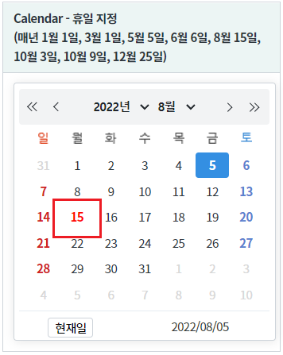

[Calendar] 특정 날짜를 휴일로 지정하기
1개요
휴일을 지정하는 예제입니다. 스크립트로 휴일로 지정할 날짜를 설정합니다.
2구현된 기능
컴포넌트에 휴일이 지정되지 않은 상태
컴포넌트에 휴일이 지정된 상태
컴포넌트에 휴일이 지정된 상태에서 휴일 변경하기
3예제 테스트 방법
설정별로 구성된 컴포넌트의 휴일 설정을 비교합니다. 이 예제는 매년 01월 01일, 03월 01일, 05월 05일, 06월 06일, 08월 15일, 10월 03일, 10월 09일, 12월 25일을 휴일로 지정하였습니다.
3.1휴일이 지정되지 않은 상태
그림 1.브라우저(Chrome) 실행 예시 - 휴일이 지정되지 않은 상태

3.2휴일이 지정된 상태
그림 2.브라우저(Chrome) 실행 예시 - 휴일이 지정된 상태

3.3휴일이 지정된 상태에서 휴일 변경하기
Step1. 지정된 휴일을 확인합니다. 예제의 캘린더를 8월 15일로 변경하여 휴일이 지정되어 있음을 확인합니다.
그림 3.브라우저(Chrome) 실행 예시 - 8월 15일이 휴일로 지정된 상태
Step2. 버튼 지정된 휴일을 제거하고 매년 5월 5일을 휴일로 지정하기 을 클릭합니다.
Step3. 기 지정된 휴일(8월 15일)이 제거된 것을 확인합니다.
그림 4.브라우저(Chrome) 실행 예시 - 8월 15일이 휴일에서 제거된 상태
Step4. 캘린더를 5월로 변경하여 5월 5일만 휴일로 지정됨을 확인합니다.
그림 5.브라우저(Chrome) 실행 예시 - 5월 5일이 휴일로 설정된 상태

4구현 예시
4.1휴일 지정하기
원하는 시점에 스크립트로 휴일을 지정합니다. 예제의 경우 화면이 로딩 후 지정하기 위해 함수 scwin.onpageload에 작성했습니다.
//매년 1월 1일, 3월 1일, 5월 5일, 6월 6일, 8월 15일, 10월 3일, 10월 9일, 12월 25일을 휴일로 지정 cal_exam2.setHoliday("*0101,*0301,*0505,*0606,*0815,*1003,*1009,*1225");
4.2휴일 지정하기 - 기지정된 휴일 제거
휴일을 지정할 때 기 지정된 휴일을 제거하고 새로운 휴일을 지정하는 예제입니다.
//기존 설정을 제거하고, 매년 5월 5일을 휴일로 지정하기 cal_exam2.setHoliday("*0505", true);
5주요 API
setHoliday( dateStr , removeHoliday )
setHolidayRef( setHolidayRef )
6참고 문서
[웹스퀘어5 SP5 개발 가이드] Calendar
링크 : https://docs1.inswave.com/sp5_user_guide/8df43d1f59fab704#56b80cc9fef2c150
[웹스퀘어5 SP5 개발 가이드] Calendar 휴일 지정 및 취소 직접 지정
링크 : https://docs1.inswave.com/sp5_user_guide/8df43d1f59fab704#7a652fb397a6a1e8
7참고 동영상
Calendar 휴일 지정 및 취소 직접 지정
링크 : https://youtu.be/9FebFKSN4jM